HIST 270 · History of China · Chapter 16 · Lecture 3
The Kowtow and the Crowd
Britain Asked for Open Trade and the Emperor Said No; at Home the Population Doubled, and Millions of Sons Were Left Without Land
1700–1800 · Study Buddy edition
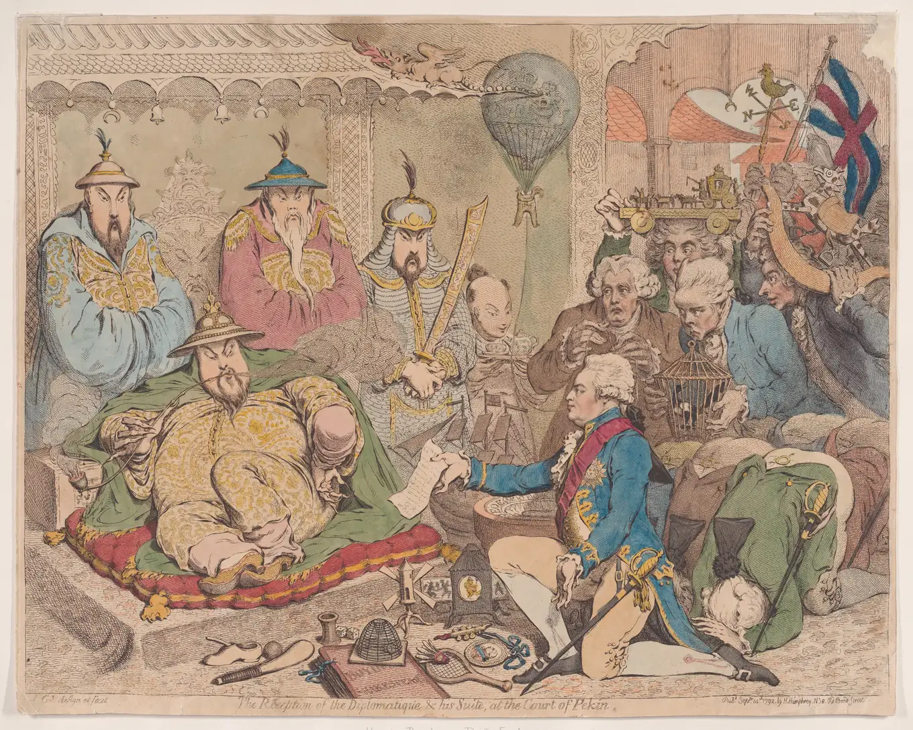
The Reception of the Diplomatique and His Suite at the Court of Pekin, a cartoon by James Gillray, published in London on 14 September 1792, before the embassy had even arrived (outside the textbook). Metropolitan Museum of Art. CC0, Wikimedia Commons.
Recap · Ming and Qing foreign relations
Recap: The Ming Let Foreigners Trade Only Where and When It Chose
The Ming treated foreign trade as part of tribute: foreign rulers sent envoys and gifts, and the emperor granted gifts in return · Ch. 14 L2 · tribute-order ↗
The Qing kept a diplomatic system modeled on the Ming one; Korea, Ryukyu, Vietnam, and others sent envoys to Beijing.
Europeans were not full players in this system, but they had a marginal presence · L2 y · next ↗
Sources: Ebrey, Ch. 16, p. 280; Ch. 14 L2 for the Ming tribute and port rules.
Q6 story · London and Guangzhou · 1700s
Britain Was Buying Tea by the Shipload
European trade with China was concentrated at Guangzhou, in the far south.
Soon after 1600 the Dutch East India Company pushed aside the Spanish and Portuguese, and the British East India Company soon competed with the Dutch.
In the 1600s Europeans wanted porcelain and silk; in the 1700s they wanted tea.
By the end of the 1700s, tea made up 80 percent of Chinese exports to Europe.
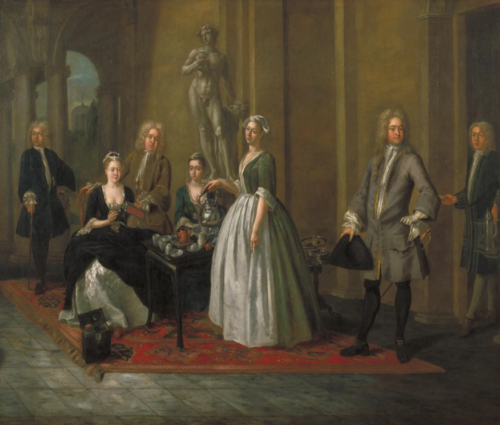
An English Family at Tea, by Joseph Van Aken, about 1720. Tate, London (outside the textbook). Public domain, Wikimedia Commons.
Sources: Ebrey, Ch. 16, p. 280.
Q6 story · Guangzhou · 1700s
At Guangzhou, Europeans Could Not Enter the City or Even Learn Chinese
Europeans could trade only at Guangzhou, though tea grew mostly in the Yangzi valley, far to the north.
Licensed Chinese merchants formed a guild and had to guarantee that the Europeans obeyed Qing rules.
Europeans had to pay cash, and could not enter the walled city, ride in sedan chairs, bring in women or weapons, or learn Chinese.
Historians call these rules the Canton system (outside the textbook).
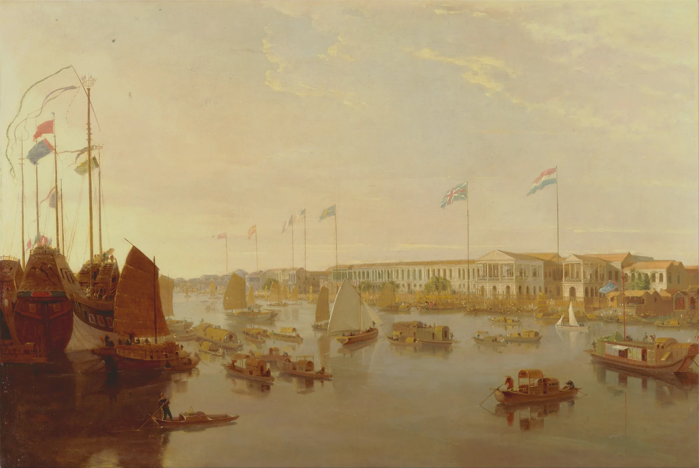
The European "factories," the merchants' offices and warehouses outside the walls of Guangzhou, painted by William Daniell, 1806 (outside the textbook). Public domain, Wikimedia Commons.
Sources: Ebrey, Ch. 16, p. 280; the name "Canton system" and the date 1757 from outside the textbook.
Q6 concept · Balance of trade
Concept: A Lopsided Balance of Trade Meant Silver Flowed One Way
Concept
Balance of trade
The difference between what a country sells to another and what it buys from it. When one side buys far more than it sells, it must make up the difference by paying in money, which in this period meant silver.
As British purchases of tea grew, the balance of trade became more and more lopsided.
British merchants could not find goods that Chinese merchants wanted to buy from them.
So the British paid in silver, much of it from the Americas (outside the textbook) · Ch. 14 L2 · silver-route ↗
Britain wanted that to change.
Sources: Ebrey, Ch. 16, p. 280; Ch. 14 L2 for silver; silver from the Americas from outside the textbook.
Q6 story · London to China · 1792–1793
In 1793 Lord Macartney Arrived with Five Goals
The British government distrusted the rich East India Company and wanted direct diplomatic relations with China.
King George III sent Lord Macartney, a former ambassador to Russia and governor of Madras in India.
He was to win a trading place near the tea districts, a commercial treaty, a market for British goods, and an envoy in Beijing.
He was also to open Japan and Southeast Asia to British commerce.
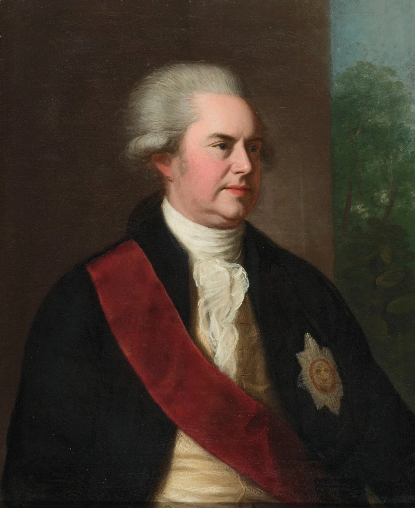
Lord George Macartney, painted in 1792 by Thomas Hickey, who then sailed with him as the embassy's painter (outside the textbook). Public domain, Wikimedia Commons.
Sources: Ebrey, Ch. 16, p. 280.
Q6 story · The voyage · 1792–1793
He Brought Six Hundred Cases of Gifts, and His Only Chinese Speaker Was a Twelve-Year-Old Boy
Macartney traveled with an entourage of eighty-four people.
Six hundred cases held British goods to impress the court: clocks, telescopes, knives, globes, plate glass, Wedgwood pottery, paintings, woolens, and carpets.
The only member of the party who could speak Chinese was a twelve-year-old boy.
He had picked up some Chinese by talking with Chinese on the long voyage.
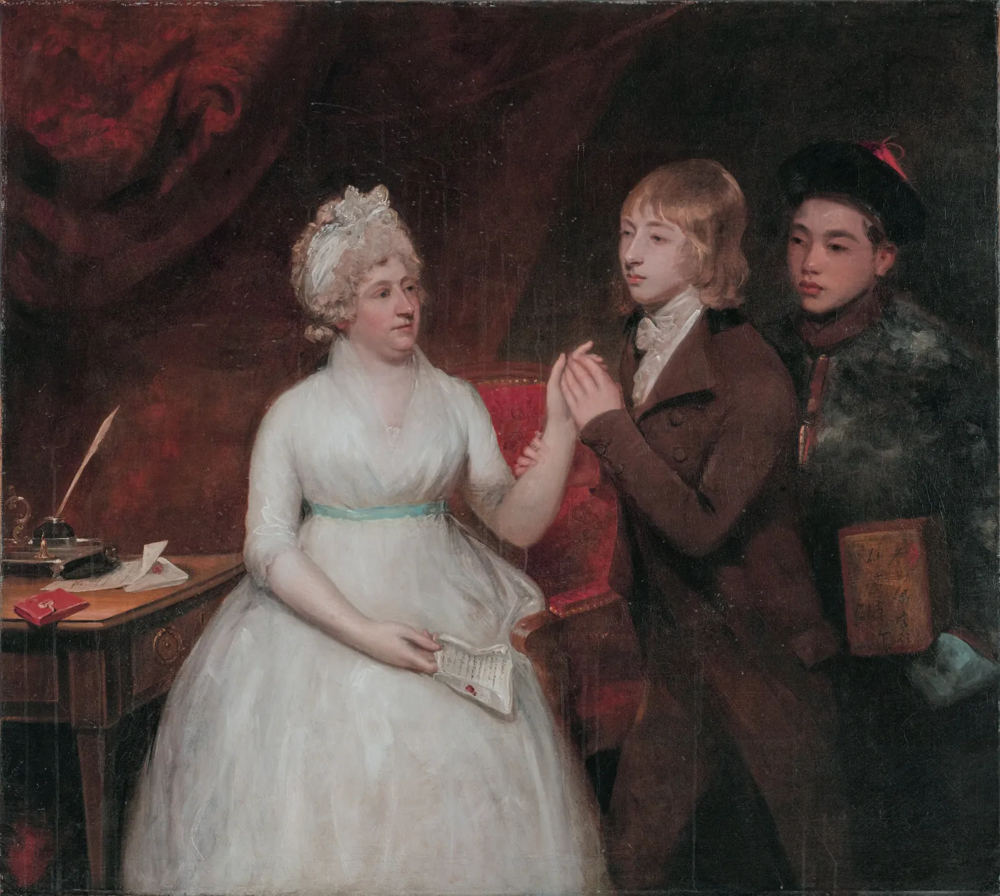
Lady Staunton greets her son George Thomas Staunton, home from China, with a Chinese boy carrying a chest of tea. John Hoppner, 1790s (the identification is outside the textbook). Public domain, Wikimedia Commons.
Sources: Ebrey, Ch. 16, p. 280; the boy's name and later life from outside the textbook.
Q6 story · Beijing and the summer retreat · 1793
Macartney Refused to Kowtow, and Met Qianlong at His Summer Retreat
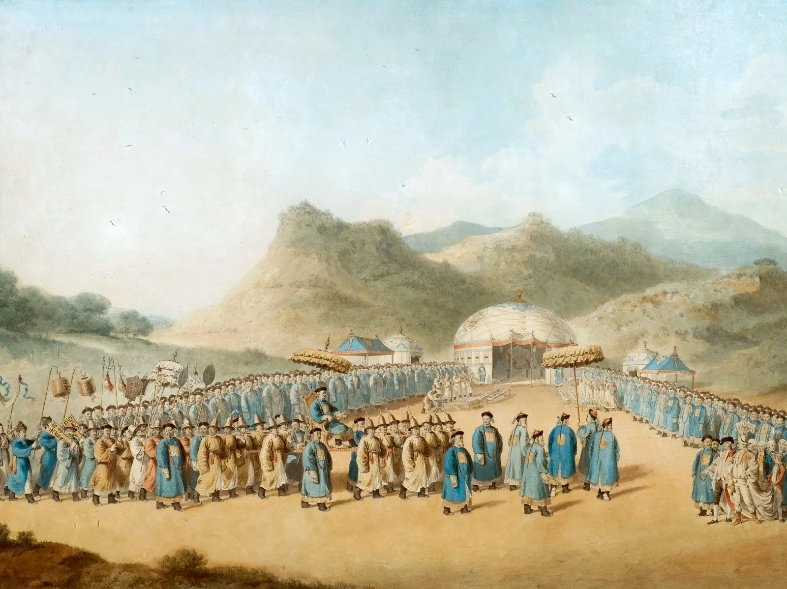
The Approach of the Emperor of China to His Tent in Tartary to Receive the British Ambassador, William Alexander, 1793. Alexander did not attend; he worked from a fellow officer's sketches (outside the textbook). Public domain, Wikimedia Commons.
Macartney carried a letter from George III; it had been written in Chinese, but its language was not appropriate for addressing an emperor.
Still, the British party was allowed to go on to Beijing.
There Macartney objected to performing the kowtow.
Finally he was allowed to meet the Qianlong emperor more informally at his summer retreat.
Sources: Ebrey, Ch. 16, p. 280; the place name Rehe, the date, and how Macartney knelt from outside the textbook.
Q6 story · The court's answer · 1793
The Court Saw No Merit in His Requests and Kept Its System
No negotiations followed the meeting: the Qing court saw no merit in Macartney's requests.
The court was as interested in keeping its regulated trade as Britain was in doing away with it.
Qianlong's reply to the king, in a 1914 translation: "I set no value on objects strange or ingenious, and have no use for your country's manufactures" (outside the textbook).
The Chinese did not learn much about Europe or Britain from this encounter.
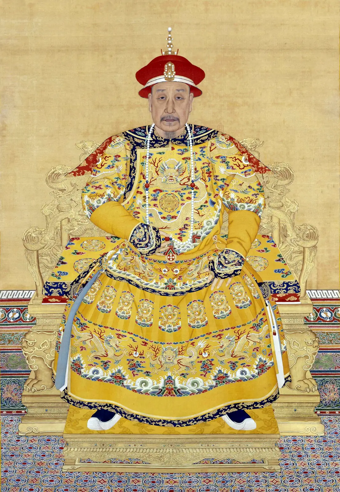
The Qianlong emperor in old age, anonymous court painter. Palace Museum, Beijing. Public domain, Wikimedia Commons.
Sources: Ebrey, Ch. 16, pp. 280–281; the edict line from E. Backhouse and J. O. P. Bland, Annals and Memoirs of the Court of Peking (1914), outside the textbook.
Reading Guide · Review Question 6
Reading Guide · Review Question 6
Review Question 6
The Canton System and the Macartney Mission: Examine the Qing Dynasty's regulation of European trade during the eighteenth century. What were the objectives of the British Macartney Mission of 1793, and why did the Qianlong emperor ultimately reject them?
In the 1700s China's Population Nearly Doubled, to About 300 Million
For more than a century three hard-working emperors gave China a respite from war and disorder.
The population seems to have nearly doubled, from 150–175 million to 300–325 million.
The Ming population had also grown fast; the Qing doubling came on top of it · Ch. 14 L3 · doubling ↗
By 1800 one person in three on earth may have lived in China (outside the textbook).
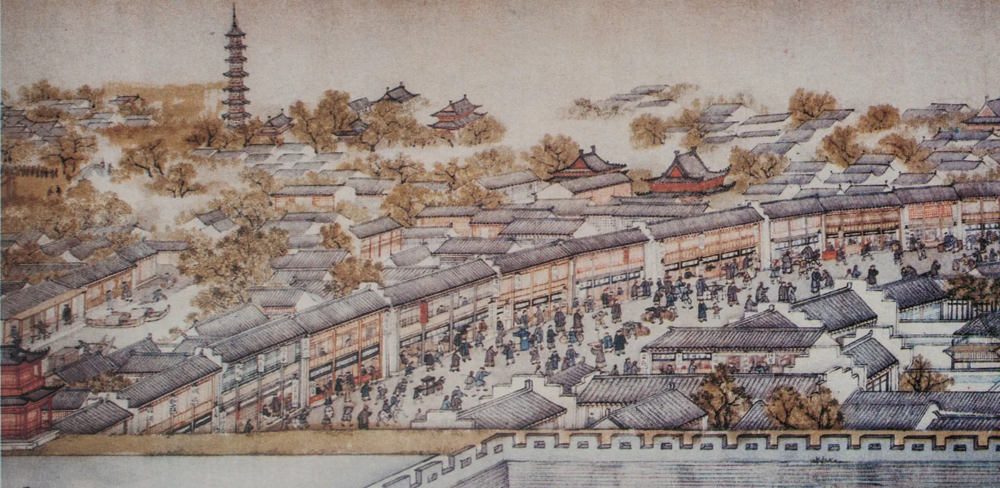
A crowded street at Changmen gate, Suzhou, from Xu Yang's scroll Prosperous Suzhou, 1759 (outside the textbook). Liaoning Provincial Museum. Public domain, Wikimedia Commons.
Sources: Ebrey, Ch. 16, p. 273; Ch. 14 L3 for Ming population growth; world share from outside the textbook.
Q7 analysis · Why so many people?
Warmer Weather, American Crops, Fewer New Diseases, and Famine Relief
Historians point to four causes, and no single one explains the growth.
American crops let farmers use hilly or poor land they had rejected before · Ch. 14 L2 · new-crops ↗
When drought or flood struck, the Qing opened granaries and gave direct relief, so fewer people died in famines.
Fewer deaths in bad years meant more children grew up to have children.
☀
Global warming lengthened the growing season.
🥔
New World crops spread: sweet potatoes, white potatoes, peanuts, maize.
✚
New diseases spread more slowly than in the 1500s, when global traffic first expanded.
⚖
Famine relief: the government ran granaries and gave direct relief.
Four factors from Ebrey, pp. 273, 284. Maize is from outside the textbook.
Sources: Ebrey, Ch. 16, pp. 273, 283–284; Ch. 14 L2 for New World crops.
Q7 concept · Partible inheritance
Concept: Partible Inheritance Split the Family Farm Among All the Sons
Concept
Partible inheritance
The custom of dividing a family's land among all of its sons, rather than leaving it to one heir. With more surviving sons in each generation, each son's share grew smaller.
A farm that fed one family was divided among the sons, and then among their sons.
With population growing, the practice led to farms too small to support a family.
Small farmers easily fell into debt and sold or mortgaged their land.
Poorer families turned to side work, such as weaving mats and baskets, or sent men to town in winter.
Sources: Ebrey, Ch. 16, pp. 283–284; the equal-shares definition from outside the textbook.
Q7 story · Villages and towns · 1700s
Concubinage and Infanticide Left Many Men with No One to Marry
Many men could not marry, because there were too few marriageable women.
The rich took extra women as concubines, and poor families who could not raise another daughter sometimes let newborn girls die.
The shortage fed a traffic in women: girls and women were sold as wives or concubines, wives were sold by desperate husbands, and some were kidnapped (outside the textbook).
A man with no land and no wife had little to keep him in his village.
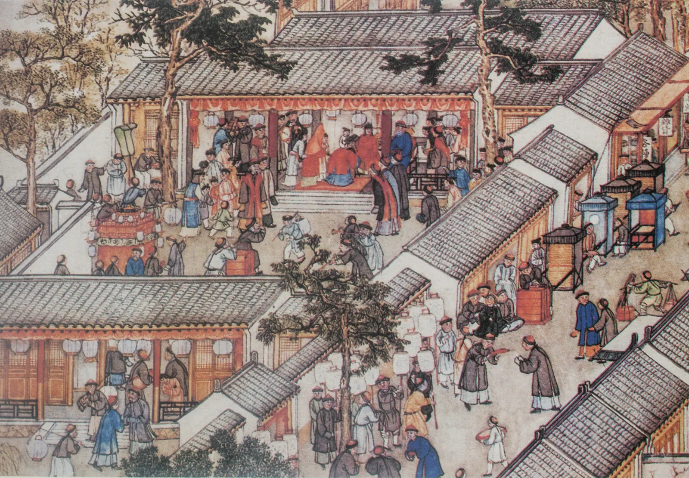
A wedding in a prosperous household, from Xu Yang's Prosperous Suzhou, 1759 (outside the textbook). Public domain, Wikimedia Commons.
Sources: Ebrey, Ch. 16, p. 284; the traffic in women from outside the textbook (Matthew H. Sommer).
Q7 story · Roads, canals, and mines · 1700s
Landless Bachelors Hauled Boats, Carried Chairs, and Mined Copper
Men with little or no land and unable to marry often left their villages to look for work.
Some traveled with tools as carpenters or farmhands; others pulled grain boats up the Grand Canal.
In cities they worked as dockhands, sedan-chair carriers, and night-soil collectors; others walked to the copper mines of the southwest.
Both the government and settled villagers were wary of these rootless men · L2 r · queue-clipping ↗
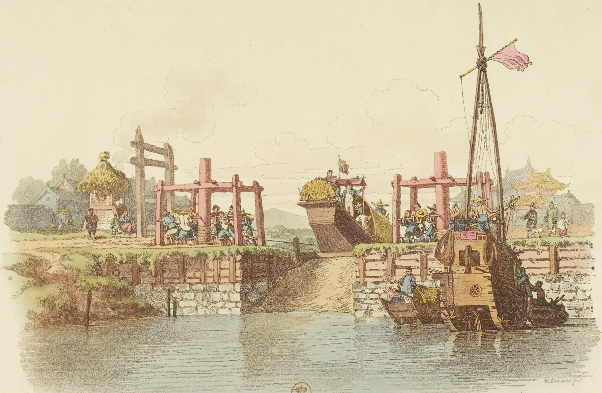
Laborers turn capstans to haul a boat over a stone ramp between two canals in Zhejiang, which the British embassy crossed on 16 November 1793. William Alexander, The Costume of China, 1805 (outside the textbook). Bibliothèque nationale de France. Public domain, Wikimedia Commons.
Sources: Ebrey, Ch. 16, p. 284; Ch. 16 L2 for the soul-stealing panic.
Q7 story · The hills and frontiers · 1700s
Settlers Pushed into the Hills, Where the Miao and Other Peoples Lived
As the population grew, people pushed into peripheral areas, clearing hillsides and moving to the frontiers.
Sweet potatoes, white potatoes, peanuts, and tobacco let them farm land once thought too hilly or poor.
In the process they often pushed out peoples who had lived there for centuries, such as the Miao.
What happened to the Miao is the story of the Pierian Spring · t · ps-uplands ↩
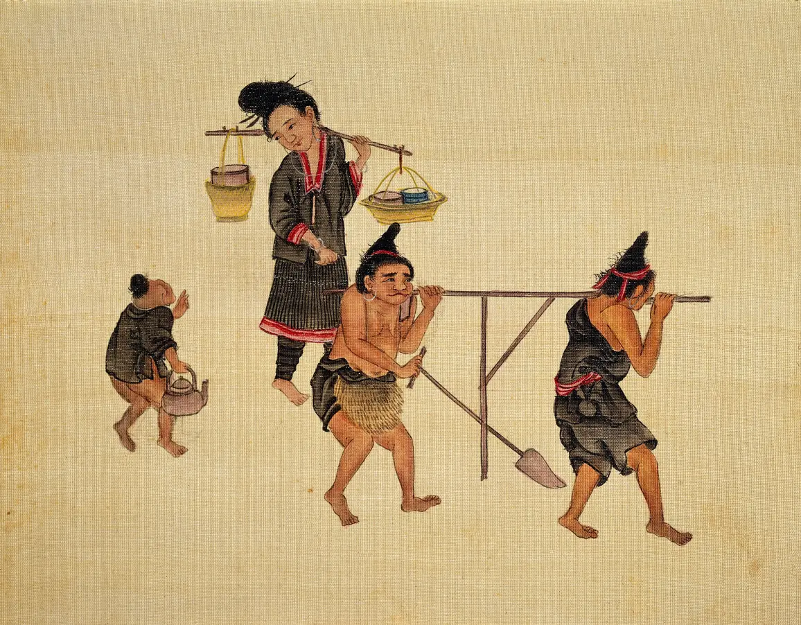
"Red Miao" villagers going to their fields, from a Qing album of the peoples of the southwest (the album is outside the textbook). Wellcome Collection. CC BY 4.0, Wikimedia Commons.
Sources: Ebrey, Ch. 16, pp. 283–284, 286.
Reading Guide · Review Question 7
Reading Guide · Review Question 7
Review Question 7
Demographic Boom and the Agricultural Economy: Identify the primary factors that contributed to the doubling of the Chinese population during the eighteenth century. What were the social and economic consequences of this massive demographic shift?
An open-air play in Suzhou, from Xu Yang's Prosperous Suzhou, 1759 (outside the textbook). Public domain, Wikimedia Commons.
Sources: Ebrey, Ch. 16, pp. 281–285.
Pierian Spring · Independent Study
Today's lecture ends here. Continue on your own: the stories below finish this chapter's history, and each ends with a review question to answer.
"A little learning is a dang'rous thing; Drink deep, or taste not the Pierian spring."Alexander Pope, An Essay on Criticism, 1711
Pierian Spring · Q11 story · The southern hills · 1700s
Settlers with Sweet Potatoes Climbed into the Southern Hills
As Han families multiplied, the crowded lowlands could not hold them all.
They pushed into peripheral areas, clearing upland forests and moving to the frontiers.
Sweet potatoes, white potatoes, peanuts, and tobacco grew on slopes too steep or poor for rice.
The hills they cleared already had owners · p · uplands ↩
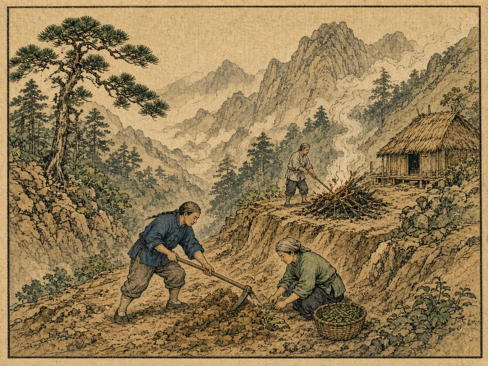
AI-generated illustration in a woodblock-print style, made for this deck: Han settlers clear a steep hillside in the southern uplands, hoeing a new terrace, burning brush, and planting sweet potatoes beside a thatched hut, 1700s. An interpretation, not a historical source.
Sources: Ebrey, Ch. 16, pp. 283, 286. Image: AI-generated interpretation.
Pierian Spring · Q11 names · The peoples of the southern hills
Names Box: Miao, Yao, Zhuang, and Hakka
Who Lived in the Southern Hills?
Miao, Yao, ZhuangIndigenous, non-Han peoples of the south and southwest, with their own languages and customs; "and many other names"
Aboriginal peoplesThe textbook's term for these groups: people who had lived in the area for centuries before Han settlers came
HakkaA Han Chinese group, migrants who were moving into the Hunan–Guizhou border by the 1790s; the name means "guest people" (outside the textbook)
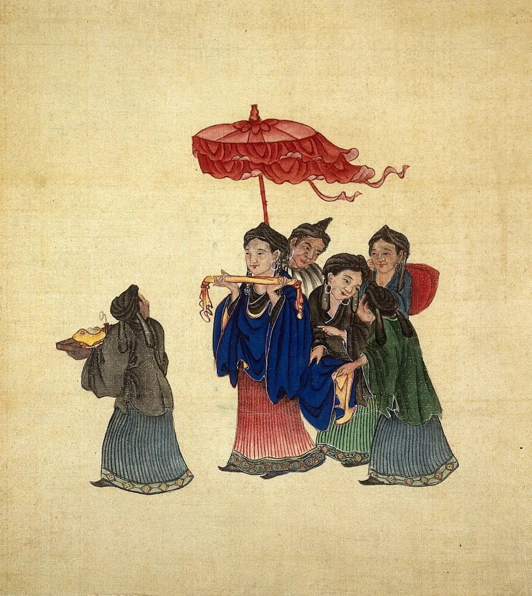
A page from a Qing "Miao album," the illustrated guides that officials made to the non-Han peoples of the southwest (the album is outside the textbook). Wellcome Collection. CC BY 4.0, Wikimedia Commons.
Sources: Ebrey, Ch. 16, pp. 283–284, 286; the meaning of "Hakka" and the albums from outside the textbook.
Pierian Spring · Q11 story · Miao country · 1720s onward
Han Settlers Took Miao Land, and the Miao Fought Back from the 1720s
Non-Han ethnic groups were another part of society that often felt aggrieved.
As the Han population swelled, more and more settlers moved into Miao territories, often taking Miao land.
The Miao put up fierce resistance beginning in the 1720s.
In the same years the Qing replaced many native chieftains with regular officials (outside the textbook).
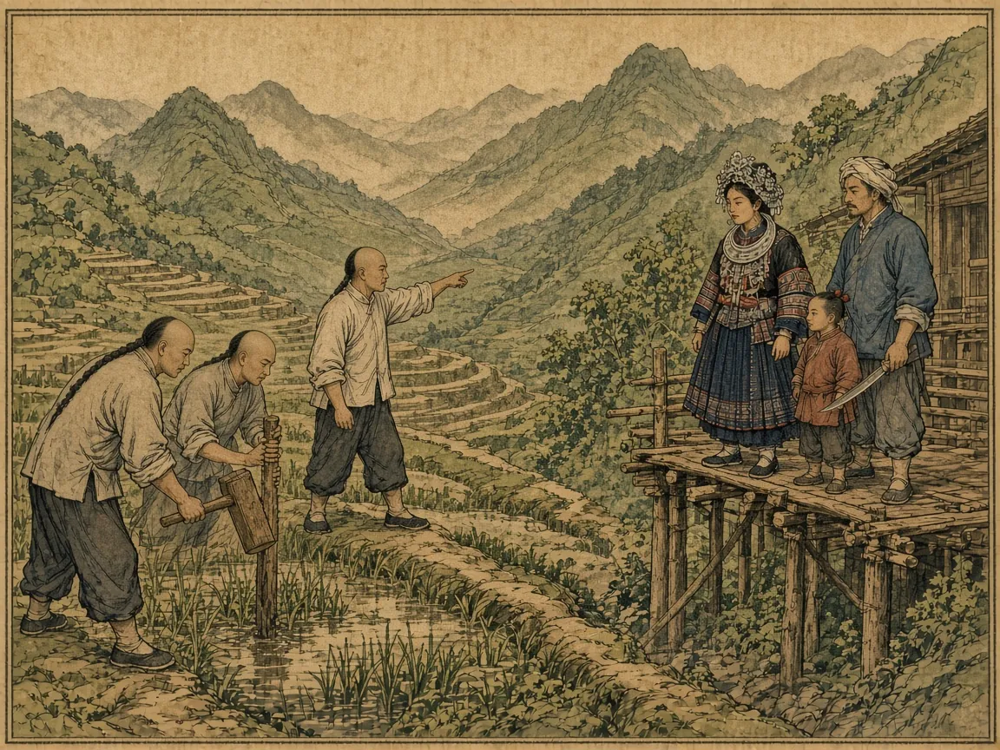
AI-generated illustration in a woodblock-print style, made for this deck: Han settlers stake out a terraced field below a Miao village while a Miao family, the woman in her silver neck rings and pleated skirt, watches from the edge of their home, 1700s. An interpretation, not a historical source.
Sources: Ebrey, Ch. 16, p. 286; the replacement of native chieftains from outside the textbook. Image: AI-generated interpretation.
Pierian Spring · Q11 story · Hunan and Guizhou · 1700s
Officials Tried to Keep Miao and Han Apart, and Failed
Qing officials repeatedly tried to find ways to separate the Miao and the Han settlers.
At times rules forbade Han settlers to buy Miao land or to marry Miao, and soldiers manned walls and forts along the border (outside the textbook).
These efforts had little success: settlers kept coming, and land kept changing hands.
Discrimination continued: indigenous peoples were often exploited and treated with contempt.
Sources: Ebrey, Ch. 16, pp. 284, 286; the specific rules and forts from outside the textbook.
Pierian Spring · Q11 story · The Hunan–Guizhou border · 1795–1797
In 1795 the Miao Rose on the Hunan–Guizhou Border
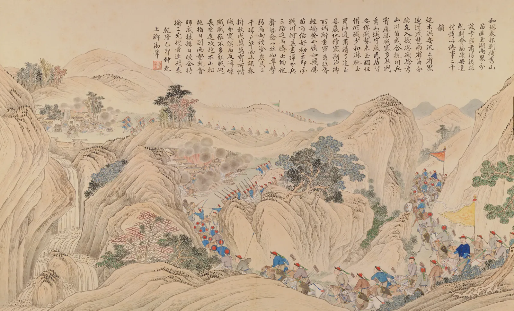
A Qing court painting of the campaign against the Miao, with an inscription dated spring 1795, from the album Pacifying the Miao Frontier (outside the textbook). Palace Museum, Beijing. Public domain, Wikimedia Commons.
In 1795 there was a great revolt of Miao along the Hunan–Guizhou border.
The Hakka, a Han group, had recently been moving into that area.
The rebels called for driving out the newcomers and taking back Miao land (outside the textbook).
The Qing found the Miao uprisings as difficult to suppress as the White Lotus revolt of the same years.
Sources: Ebrey, Ch. 16, p. 286; the rebels' slogan, the album, and the length of the campaign from outside the textbook.
Reading Guide · Review Question 11
Reading Guide · Review Question 11
Review Question 11
Internal Migration and Ethnic Conflict: How did the massive growth of the Han Chinese population during the eighteenth century impact non-Han aboriginal groups on the empire's periphery?
Macartney's Men Went Home and Wrote One-Sided Books About China
Several members of the mission wrote books about China on their return, often illustrated, and less rosy than the Jesuits' reports.
The official account, by George Staunton, said Chinese women were bred to "implicit obedience" to fathers and husbands.
Almost none of the authors spoke Chinese or could read Chinese sources; they reported what they saw from a closely escorted journey (outside the textbook).
So the books were outsiders' views, often ethnocentric, judging China by British standards (outside the textbook).
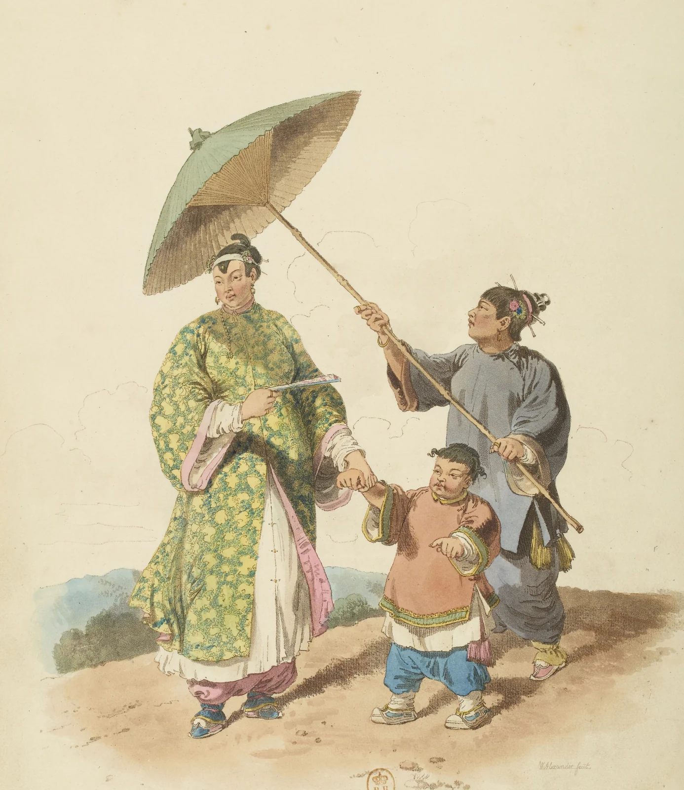
A Chinese Lady and Her Son, Attended by a Servant, William Alexander, The Costume of China, 1805 (outside the textbook). Bibliothèque nationale de France. Public domain, Wikimedia Commons.
Sources: Ebrey, Ch. 16, pp. 280–281; the authors' limits and the younger Staunton's later work from outside the textbook.
Pierian Spring · More to explore · Jiangnan and Europe · mid-1700s
Did Ordinary Chinese Live as Well as Europeans?
Some scholars argue that China's standard of living in the mid-1700s was comparable to Europe's.
Jiangnan, China's richest region, compared well with England and the Netherlands, Europe's richest.
Life expectancy, food consumption, and even transportation were at similar levels.
Sources: Ebrey, Ch. 16, pp. 273–274; the historian's name from outside the textbook.
Sources and image credits
The Stories in This Deck Rest on These Sources
Main source
Patricia Buckley Ebrey, A History of China, Chapter 16, "The Creation of the Manchu Empire (1600–1800)," pp. 273–287. All page references in this deck are to these pages.
Further reading for the facts tagged outside the textbook
Edmund Backhouse and J. O. P. Bland, Annals and Memoirs of the Court of Peking (1914), pp. 322–331, translation of Qianlong's edict to George III (slide i).
Matthew H. Sommer, Polyandry and Wife-Selling in Qing Dynasty China (2015) (slide n).
Henrietta Harrison, "The Qianlong Emperor's Letter to George III and the Early-Twentieth-Century Origins of Ideas about Traditional China's Foreign Relations," American Historical Review 122, no. 3 (2017) (slide i).
J. L. Cranmer-Byng, ed., An Embassy to China: Lord Macartney's Journal, 1793–1794 (1962) (slides f–i).
Paul A. Van Dyke, The Canton Trade: Life and Enterprise on the China Coast, 1700–1845 (2005) (slides d–e).
Kenneth Pomeranz, The Great Divergence (2000) (slide aa).
Laura Hostetler, Qing Colonial Enterprise: Ethnography and Cartography in Early Modern China (2001) (slides p, u).
Donald S. Sutton, "Ethnic Revolt in the Qing Empire: The 'Miao Uprising' of 1795–1797 Reexamined," Asia Major 16, no. 2 (2003) (slides v–x).
Images (real; all via Wikimedia Commons)
a: James Gillray, The Reception of the Diplomatique and His Suite at the Court of Pekin, 1792, Metropolitan Museum of Art. CC0.
c: Joseph Van Aken, An English Family at Tea, about 1720, Tate. Public domain.
d: William Daniell, The European Factories, Canton, 1806. Public domain.
f: Thomas Hickey, portrait of Lord Macartney, 1792. Public domain.
g: John Hoppner, Lady Staunton with Her Son George Thomas Staunton and a Chinese Servant, 1790s. Public domain.
h: William Alexander, The Approach of the Emperor of China to His Tent in Tartary, 1793. Public domain.
i: The Qianlong emperor in old age, Palace Museum, Beijing. Public domain.
k, n, r: Xu Yang, Prosperous Suzhou (details), 1759, Liaoning Provincial Museum. Public domain.
o, z: William Alexander, The Costume of China, 1805, Bibliothèque nationale de France. Public domain.
p, u: Qing "Miao albums," Wellcome Collection. CC BY 4.0.
x: Pacifying the Miao Frontier, Qing court album, Palace Museum, Beijing. Public domain.
t, v: AI-generated illustrations in a woodblock-print style, made for this deck. Interpretations, not historical sources.
l, m: Diagrams made for this deck from Ebrey, pp. 273, 283–284.
×
Canton system
A name historians give to the Qing rules for European trade: from 1757 Europeans could trade only at Guangzhou (Canton), only through licensed Chinese merchants who guaranteed their behavior, and only under strict limits on where they could live and what they could do. The name and the date are from outside the textbook.
×
Kowtow
Kneeling on both knees and bowing the head to the ground, the ritual of respect owed to the emperor at the Qing court (Ebrey, p. 280).
×
Night soil
Human waste collected from city households and latrines, usually before dawn, and carried out to be sold to farmers as fertilizer.
Night-soil collectors carried it in buckets on shoulder poles or by boat to the fields around the cities. It kept city streets cleaner and made the intensive farming of the Yangzi delta possible.
Ebrey, Ch. 16, p. 284, names the job; the description is from outside the textbook.